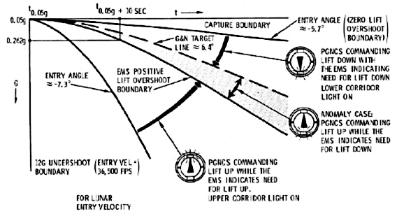

Re-Entry Corridor Physics

The Narrow Window
Re-entering Earth's atmosphere from the Moon means hitting a corridor just 2.15 degrees wide — like threading a needle from 200,000 miles away.
Too Steep (-7.4° or steeper)
Result: Burn up
The capsule slams into thick air too fast. Deceleration and heat climb past what the heat shield — or the crew — can survive.
Just Right (-6.5° target)
Result: Safe landing
Gradual descent. The heat shield does its job, the parachutes deploy, the crew survives.
Too Shallow (-5.25° or shallower)
Result: Skip off the atmosphere
Like a stone skipping off a pond, the capsule bounces back into space. It would eventually fall back to Earth — but hours or days later, long after the oxygen and battery power ran out.
Why the Radio Goes Silent
Hitting the atmosphere at nearly 25,000 mph, the capsule compresses the air ahead of it into a 5,000°F sheath of plasma — gas so hot that electrons are ripped off the atoms. Plasma blocks radio waves completely. No voice, no telemetry, nothing in or out.
Every Apollo crew coming home from the Moon flew through this blackout — normally around four minutes. Until the capsule slows down and the plasma fades, nobody on Earth can know whether the crew is alive.
Apollo 13's Angle: Slightly Shallow
The target was -6.5°. Odyssey actually crossed entry interface at about -6.2°.
Nobody chose that. On the way home the trajectory kept drifting shallow — post-flight analysis traced it to a tiny push from the Lunar Module's cooling-system vent, acting like a weak thruster for days. A final course correction steepened the path, but not all the way back to the target.
Still safely inside the corridor. But a shallower path means a longer, flatter glide through the plasma — and a longer blackout. Remember that on the next slide.